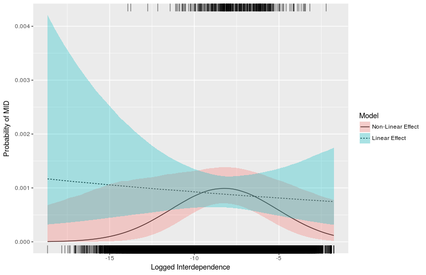

自己紹介
何者なのか？
- 生まれ年：1990年
- 職業：北海道大学法学部・公共政策大学院 “准”教授
- 専門分野
- 国際関係論：国境を越えた国同士、人同士の関係性を分析する政治学の一分野
- ゲーム理論：人間や国家の行動を数理的にモデル化するミクロ経済学の一分野
- データ分析：計量経済学（統計的因果推論）や機械学習の政治データへの応用

研究テーマ
グローバル経済が国際政治や安全保障に与える影響について、ゲーム理論やデータ分析を用いて研究しています。
- 国家間の経済的相互依存は平和や国際協調をもたらすのか？
- グローバルな株式ネットワークにおいて、
- 国家や企業はどのような影響力を持っているのか？
- 投資によって社会的に望ましくない企業に資金が流入しているのか？

教員の研究を知る
大学教員の仕事の一つは研究ですが、researchmapや科研費データベースで調べると、手軽にどのような研究をしているのか把握できます。
北大に辿り着くまで


- 模擬国連 (Model United Nations: MUN) というサークルに参加していました。


趣味


ぜひ、政治学をしましょう！
この授業を通じて政治学って面白いかもと少しでも思ってもらえたら本望です。
- 大学は勉強するだけでなく、研究もできる場所です。やってみたい研究があれば、ぜひ相談してください。
- 大学院への進学の相談などもいつでもお待ちしています。